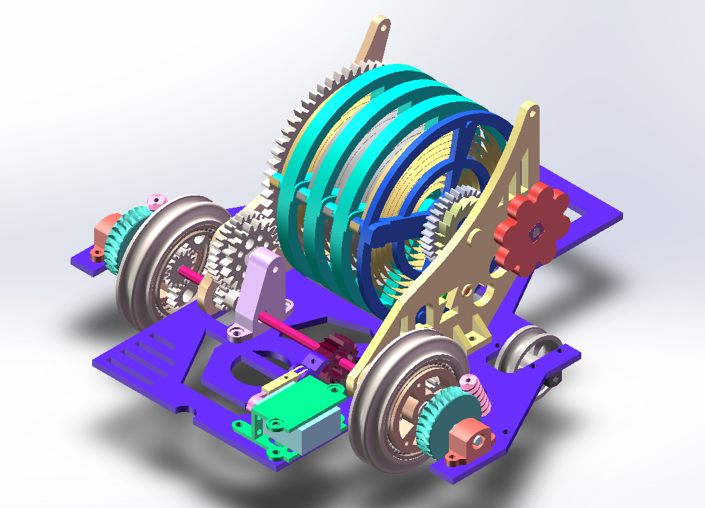
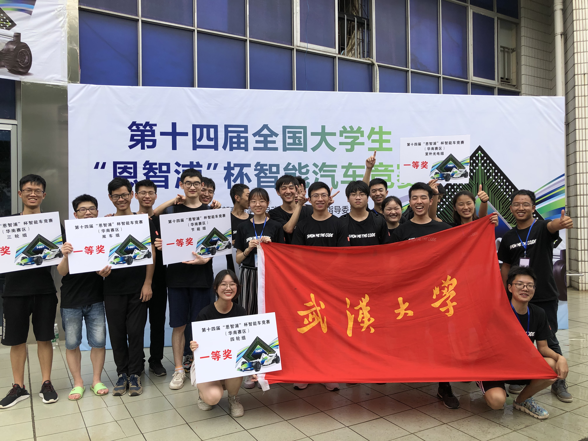
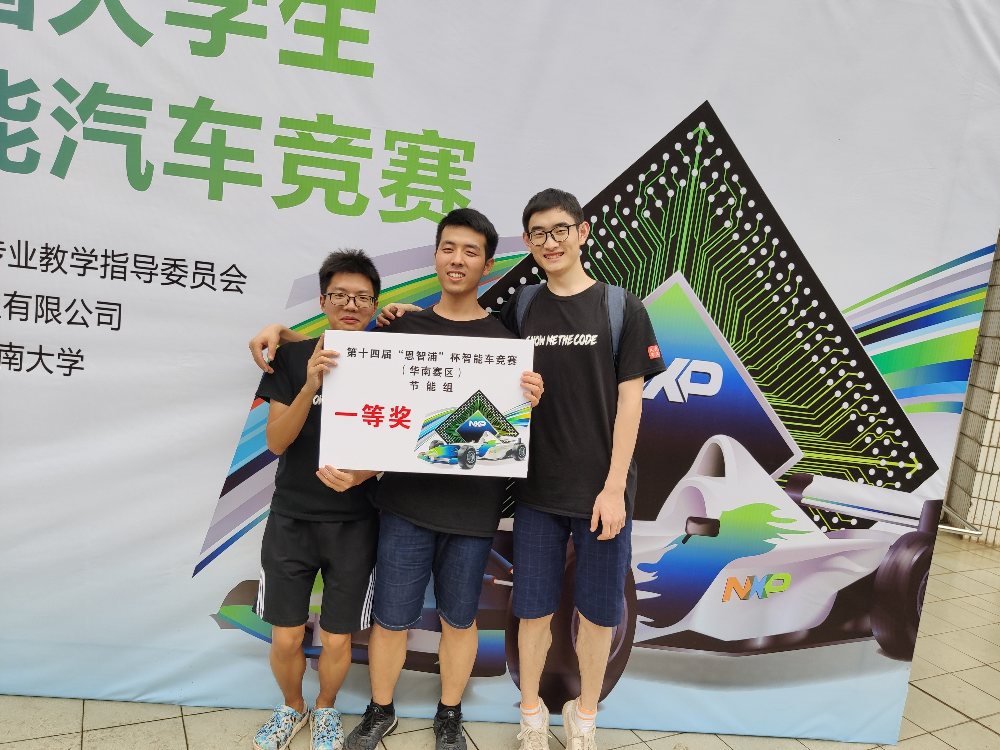
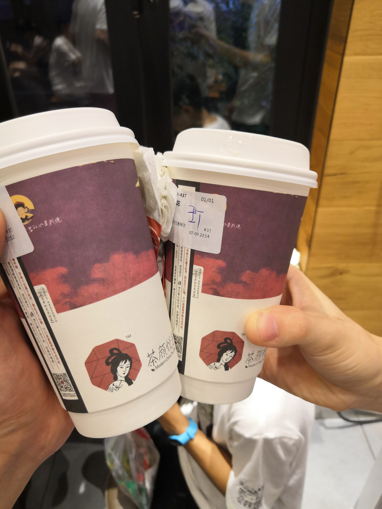
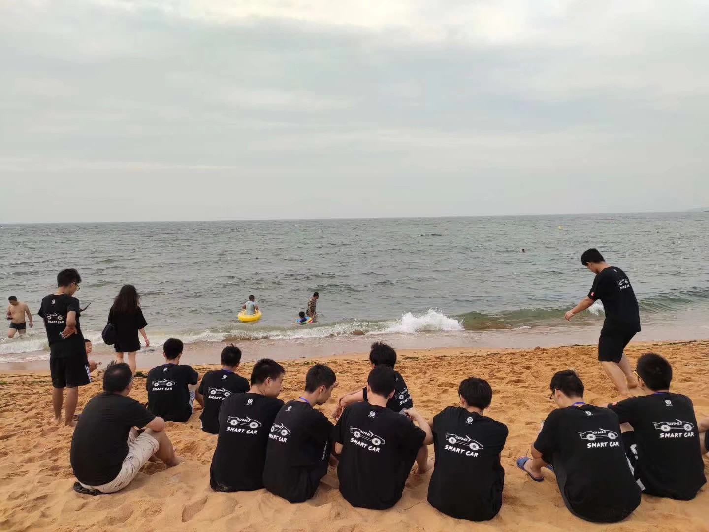
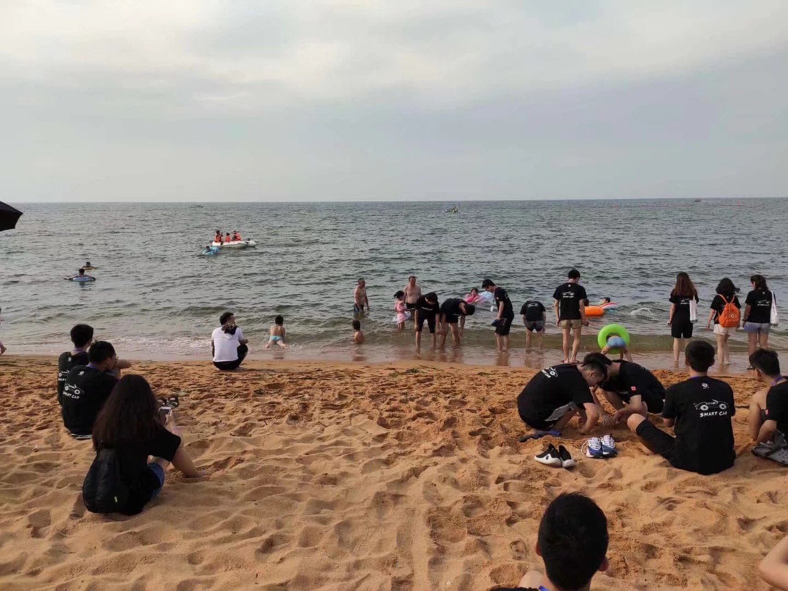
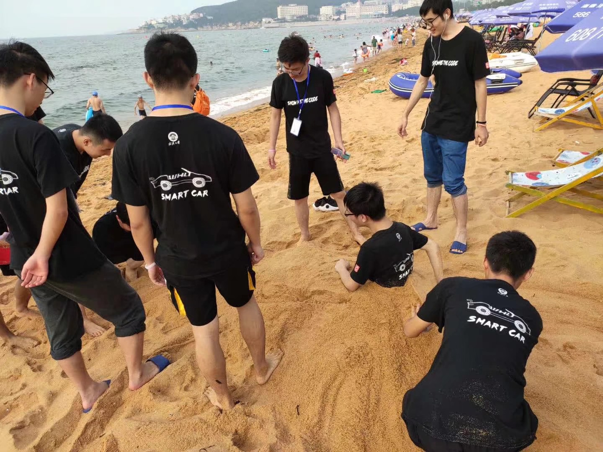
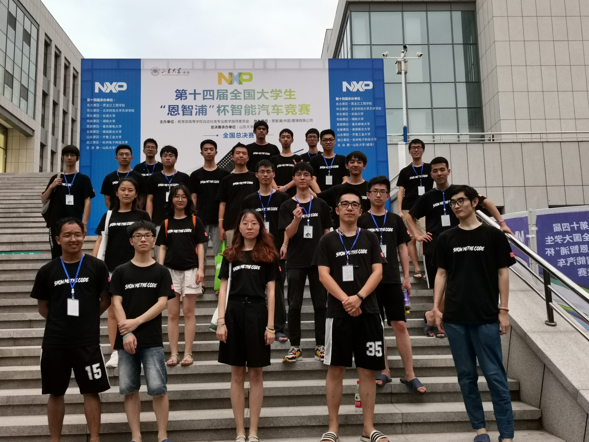

此刻
坐在电脑前，也许应该点燃一支烟，吸一口，神清气爽，念天地之悠悠，吐一口，烟云缭绕，独怆然而涕下。于烟云之端，闭上双眼，追古溯今，回味这身于其中恨其长，蓦然回首已惘然的一年。
可是，我不会抽烟。
所以，我不能在烟云中幻想，只能在现实中回望。
回忆起来，尽管最终结果平平，但它仍旧不同以往，给大学生活添上了不寻常的一笔。
一
冬天的枝叶败落后，又在春天绿意盎然，如是想想，我也应该走出决赛失利的阴霾中，好好记录下这一年的高兴与惆怅，开怀与彷徨。
从大一的那个暑假走来，转眼一年多过去了，校内赛前能装实验室汗流夹背的景象回想起来，仿佛就在昨天，那个时候想必是这一年最难熬的吧。周围都是陌生的面孔，大家都为了入队而不断学习。两个月的时间里，很多人坚持不下去走了，但更多的坚持了下来，走过11月的校内赛，成功进入智能车这个大家庭。
那段时间应当感谢与我同行的两个同学，赵富强和雷飞，不如就合称赵雷吧，哈哈，感谢“赵雷“的陪伴，和赵雷的歌曲，陪我一步一步迈过那两个月的时光。
二
校内赛后，我选择了节能组，并负责软件部分，但由于组别的特殊性，我们组所有人都负责结构设计，华南赛前我花在结构设计上的时间甚至多于调试程序的时间。
也许那个时候方向真是错了，也因此，每次开会，我们组都是被点名的那个。
前后花了几个月，多方咨询，多次改稿，最终还真的设计出了一款机械能的车模。

然而，由于零件难以找到合适的，且直观感觉它并不会节省能量，最终在四月份刚拼起来就被舍弃，前功尽弃–想想有些可惜。
这样，我们开始专心搭纯电履带车，我专心负责程序编写。
之前只是大概写了个框架，没有几个月就要比赛了，那时候我有些慌了，尤其是在圆环的处理上，由于车身晃动太大和程序鲁棒性太差，总是出现各种问题，要不识别不到，要不识别过早，或者进去出不来，总之，问题百出。
即使是华南赛就要来临，即使我们天天熬夜，但成功率仍旧不高，那个时候甚至一度怀疑是否能挺过华南赛，是不是拿个华二就结束了…
然而，我也不敢大改程序，怕这一改便成仁了…
三
七月，空气中弥漫着潮湿的味道，智能车队整装出发。我们组内调侃：去旅个游就放假啦，好开心。
不过我心里其实还存有一丝侥幸，10多分钟，总能成功的吧。
试车：路障过不去，有些慌了
预赛：电感坏了，心想凉了，还好临时修好，一次成功
决赛：一次成功
结果如我所愿，成功狗过华南赛，还拿了个第二名的成绩，但可以看出来，不论结构和程序都很不稳定。
华南赛后合照
 那几天的长沙天气不错，我们三五成群，晚上就出去逛街，喝过了网红饮品茶颜悦色，吃过了毛主席都爱吃的长沙臭豆腐，也算不虚此行。
和帅哥茶颜悦色打卡
哦，对了，张老师摔得那下有点惨0.0当时都吓到我们了
四
华南赛回来后，我决定重写程序，花了差不多十天左右的时间写完，调试。改完之后感觉良好，比之前的稳定很多，速度也从1.5提高到了1.68左右，用电池跑的时候，经常可以一次性跑五六圈都没有问题。
但是不知道为什么，每辆车刚搭出来表现不错，越跑就越变的不尽如人意了，只能降低速度，但我想这不应该是程序的问题，试了试其他样式的履带，结果一般，最终没有改动车体结构，也没有去深究这个问题。
剩下的二十天我调车的时间就下降了，和队里大部分人一样开始了养老生活。
转眼间，就从珞珈山下踏到了渤海之边。
五
我们走过了沙滩，趟过了海浪，挖过了拖鞋，埋过了雷飞…然而我只想问：海边为什么都是中年油腻大爷大妈，和我想象的不太一样啊…
- 我们在海滩


快乐的玩耍

比赛时，唉不想说了，一上场就发现和在实验室的差异了，实验室赛道较光滑，而威海的赛道摩擦力太大，以至于每次转弯车都要跳两下，出环岛时也不像在实验室那样顺滑，我在旁边胆战心惊。
而预赛的下午场和决赛，又出现了莫名其妙的问题，好几次在直道弯道处就撞上路障夭折了…这种情况在实验室从未出现过，还有一次刚到路障直接停车了，不明所以，事后我们组觉得可能是车硬件有问题，但那块板子自从按上以后我每天只是稍微跑跑，所以没有暴露出来，而当在国赛时显露出来，也来不及补救了。
于是最终拖了十四届的后腿，成为了唯一一个二等奖项。
嘤嘤嘤 …
总结
这一年无论结果如何，也伴着专老师的点拨，张老师的关怀，杨老师的鸡汤和整个车队的陪伴走过去了。这一年终将永久存留于每位十四届智能车队员的心中，并在未来珍藏，回味，历久弥新…

最后，盛年不重来，我们JinMaMen见吧！(滑稽)